co-founder → student → applied ml → san francisco.
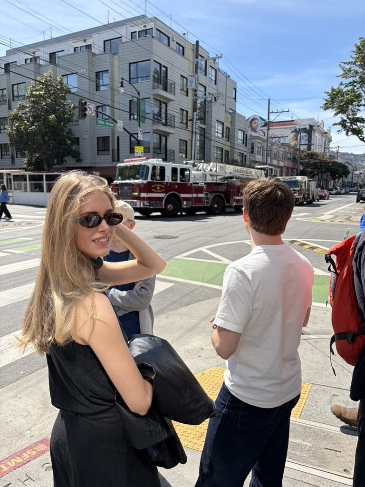
at eighteen, co-founded eha lighting, a nordic design hardware company. designed and shipped a cordless lamp with powerbank functionality built into the base. no cables, no dock. it charged your phone.
launched on indiegogo. €10,000+ in year one. represented estonia in europe. chosen entrepreneurial student of the year by estonian ministry of education.
"nordic design, with portable battery functionality."
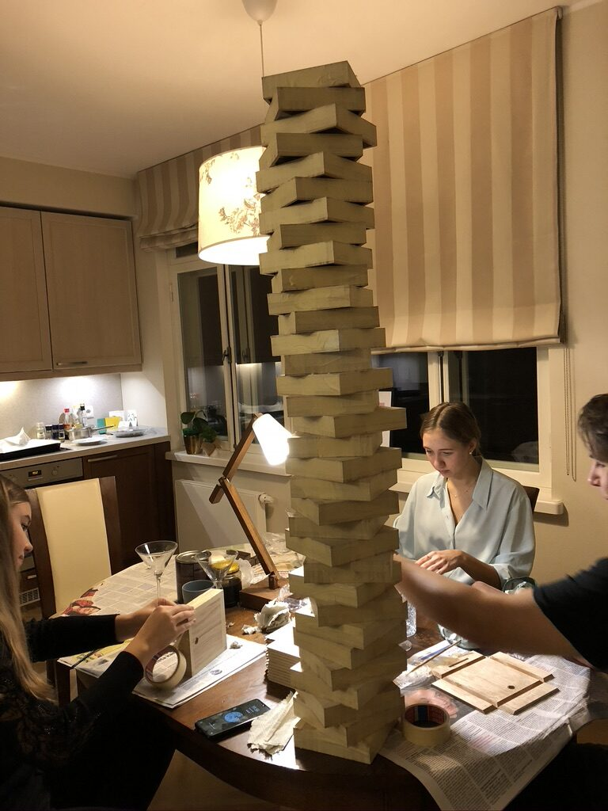
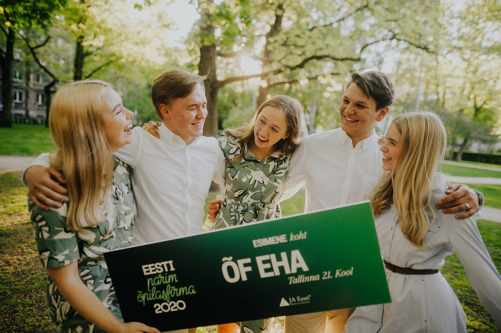
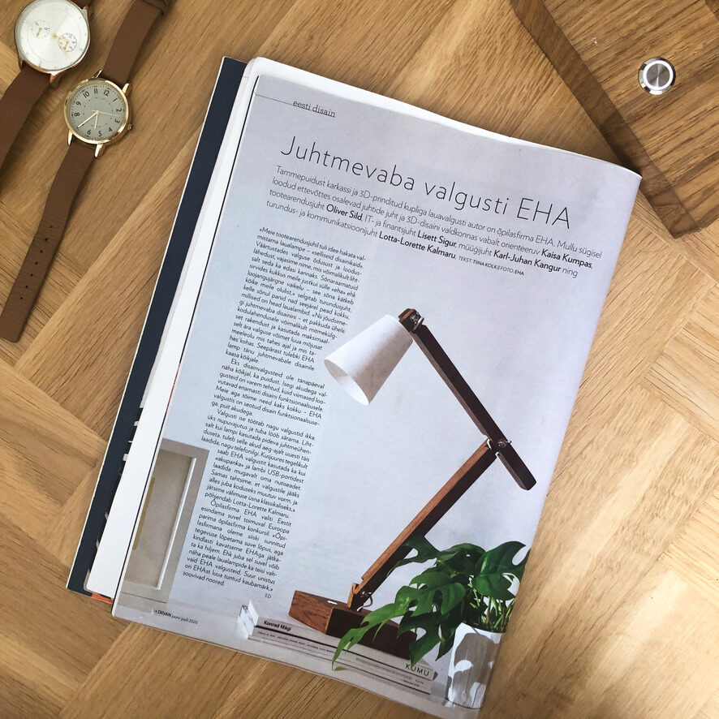
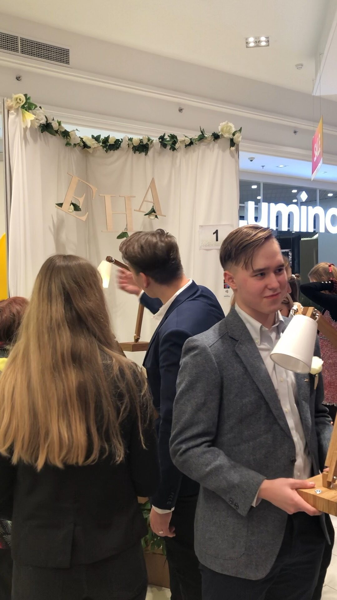
three years at stacc, an applied ml firm shipping production systems for enterprise customers. work in sectors like retail, climate tech, manufacturing, and more.
you get accustomed to every kind of data. and mainly to the fact that people never have proper data, yet want to build big, beautiful things very fast.
lead data scientist on a four-person team. built a live day-ahead energy forecasting system and the real-time operational dashboard that put it in front of decision-makers. owned airflow monitoring and incident response.
"€100,000 saved. year one."
on the team that shipped the personalised discount engine. 330+ stores, millions of transactions, 600k+ loyalty members.
"now the biggest in estonia."
scoped precision farming directly with agronomists. fused sentinel-3 satellite signals with local weather for soil temperature prediction.
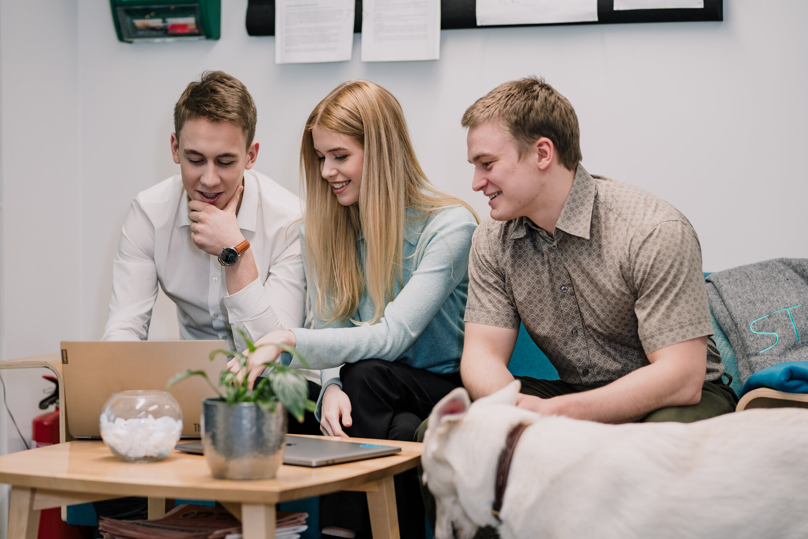
never afraid of a stage. speaking, pitching, panels, all of it. i present so the room actually has the energy to listen.
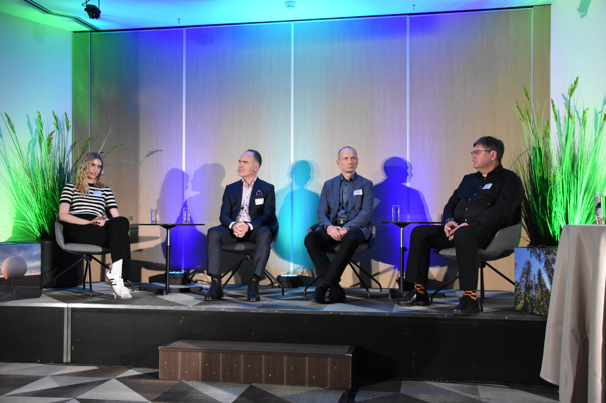
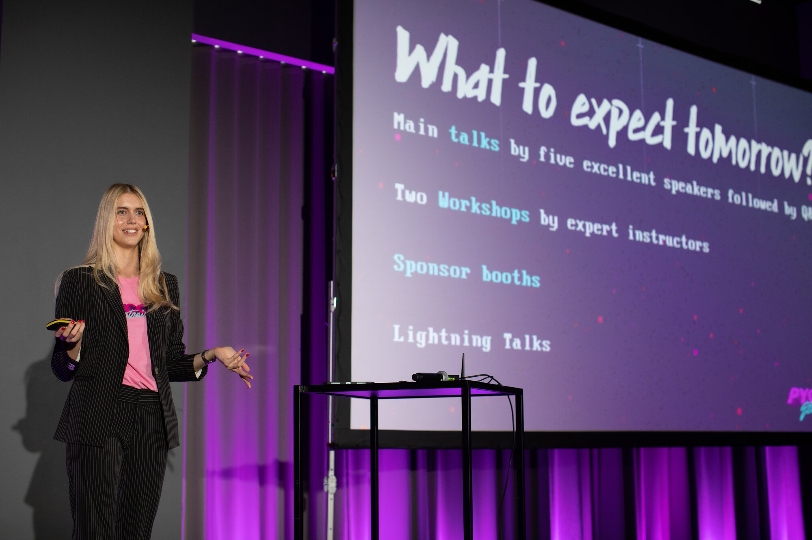
i love taking an academic tool or method and prying out what it's actually good for. the question that drives the work is always: can someone make a decision with this?
built the end-to-end pipeline across 200,000+ biobank participants. multi-modal: nmr metabolomics, 21 years of longitudinal environmental exposures, demographics.
designed a novel deep unfolded neural architecture. non-black-box, neural network flexibility, fast inference. shipped uncertainty-aware outputs with 90% coverage guarantees. auc 0.76 and 80% sensitivity.
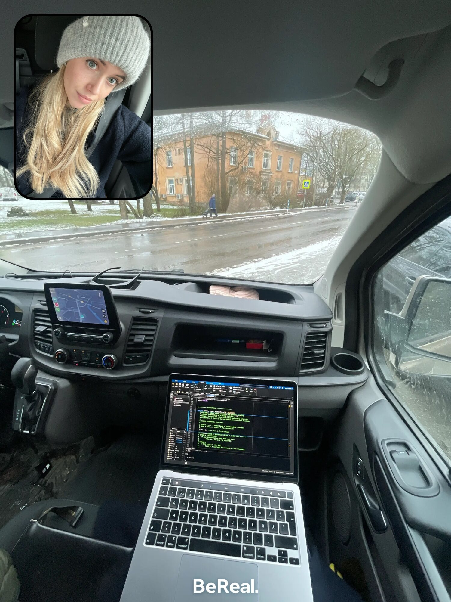
competitive eu-wide award for women in economics and tech. €10,000 grant plus ecb mentorship. selected from across europe for outstanding academic achievement and technical expertise.
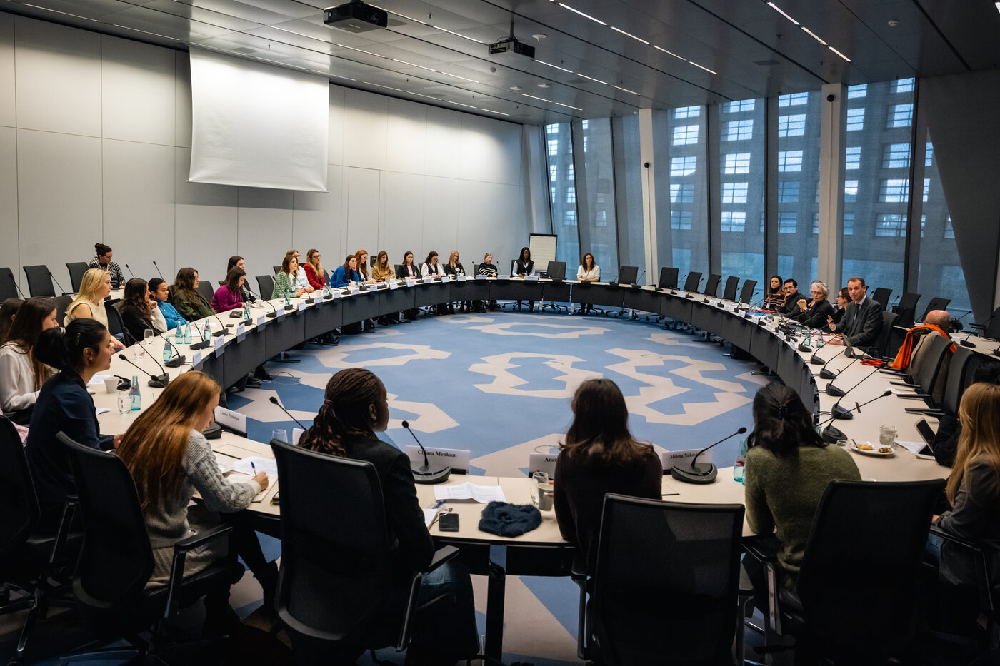
grew up in estonia. was the kid who took care of the animals. donkeys, chickens,
sheep, horses.
co-founded a company at eighteen before i'd ever written a line of production
code. came to machine learning from the math up. took the ferry across the
baltic to school in helsinki.
now on the way to san francisco, to the heart of tech. mostly in it for the
work and the animals. sf has more dogs than children. that was on the pros list.
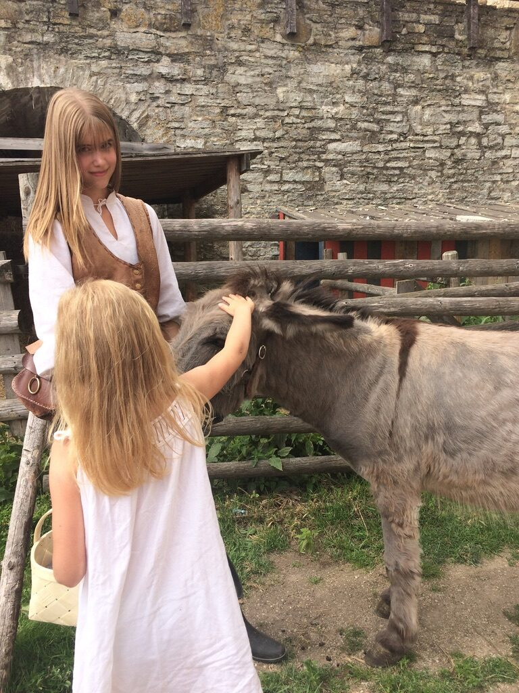
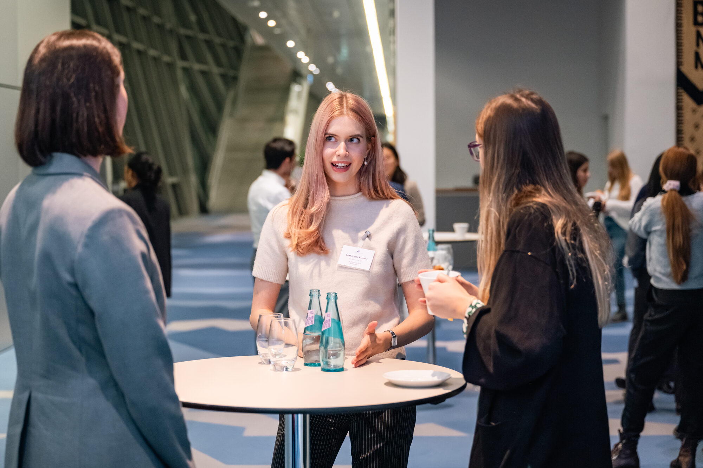
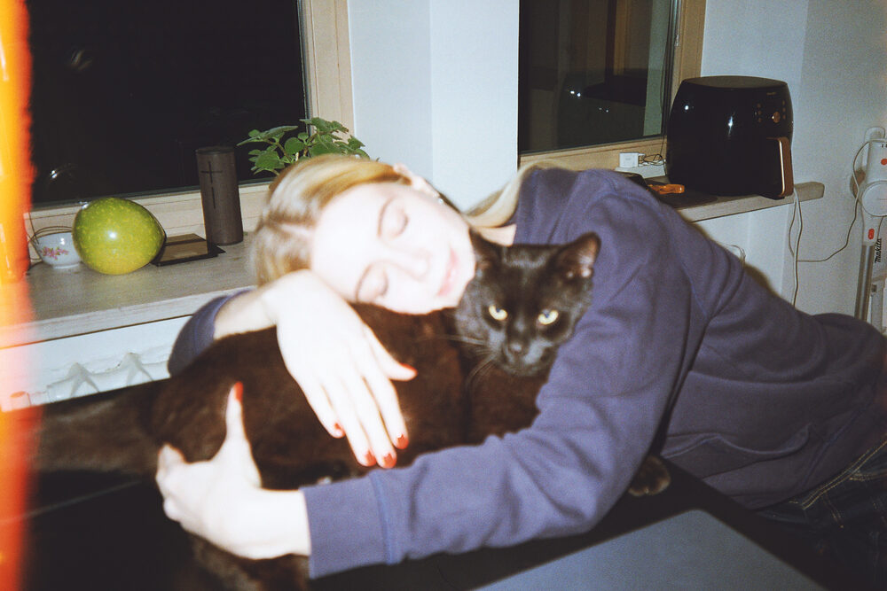
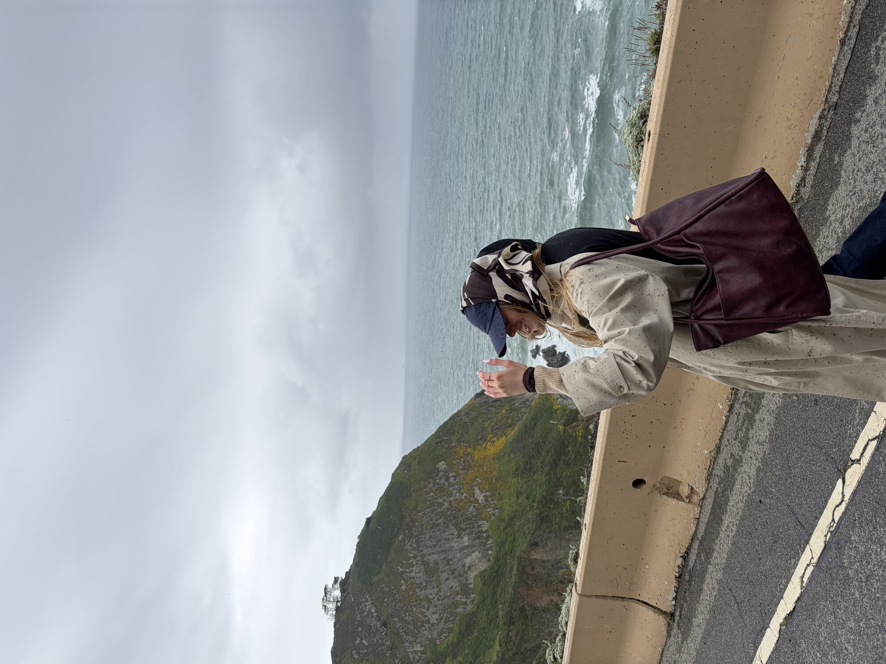